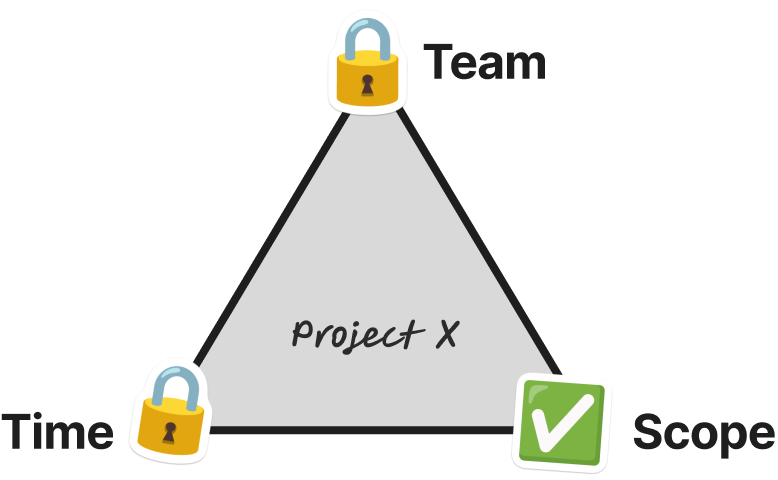

The best product managers understand that excellence is about seeing the system everyone else is operating within, and bending it to your will. Most people never figure this out. Here are the five principles that separate the ones who do.
1. Make good decisions
PMs are ultimately judged on their ability to make good decisions. You need to make good decisions, decide fast, and often with ambiguous or incomplete information. Avoid blunders, indecision, and decision by committee. Decisiveness is a skill and sometimes the best decision is knowing what not to pursue.
2. Extreme ownership
You are responsible for everything. You are responsible for how it works, how it's designed, how it's built, how it's supported, making sure you have the right team, and so on. Even when someone else is responsible, you are still responsible for making sure they're aware. There are no gaps in ownership.
3. Understand people
The number one reason PMs fail is not understanding the dynamic between them and the people around them. This could be a difference of working styles, domain knowledge, skill gaps, etc. You need to understand your team members deeply including their strengths, limits, how they work, their skill levels, incentives, and how they receive feedback.
Your job is to get from point A to point B and that requires different tools at different times. Sometimes you lead with data, sometimes a prototype or a memo, sometimes you let a mistake happen because the lesson is worth more than the shortcut, sometimes you override and ship it anyway. Use these tools wisely, some of these have side effects and lose impact with overuse. The best approach is building trust and rapport with everyone you work with.
4. Ruthless prioritization
We’ve been living in an unlimited resource environment for our entire careers so far and that is now over. Learn to prioritize when everything feels equally critical. Make hard, high conviction calls and find creative alternatives when needed.
For any project, you have three variables: team, time, and scope. Assume team and time are fixed, scope is your only free lever. Be opinionated with a clear point of view. Great products are not built by consensus.

5. Ecosystem control
Every business is its own economic ecosystem made of interrelated constituents (ex. sellers, buyers, operations, third party vendors, investors, employees). The best companies are able to exert control over their ecosystem, meaning the constituent groups are economically locked in to the business in a way that makes exiting irrational.
This is achieved through mutual incentives and deep value propositions. When every participant is economically incentivized to stay and build deeper, the company's cash flows become more durable, more predictable, and more capital efficient. That durability compounds the intrinsic value of the company.
Anyone can be a good baker by following a recipe and practicing. To be an excellent baker, you have to understand the flour, the yeast, the oven, the timing, the chemistry, the suppliers, the customers, the weather, and how they all act on each other. Learn to understand every single constituent of the ecosystem you play in and you will be playing a different game.